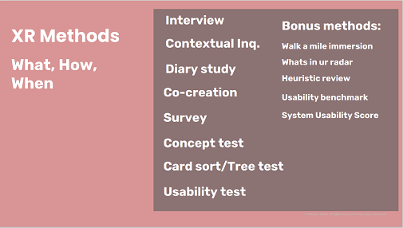
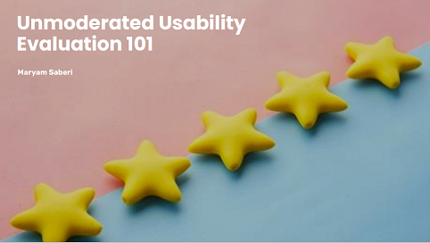

Educating teams on UXR Methods
I created a toolkit to educate the team on popular UX Research methods. I provided context on what the methods are, when to use them, and when not to use them, and some best practices for each. I shared the toolkit across teams to create alignment and awareness. Lean more about XR toolkit here. 
DIY guide for unmoderated usability
The only way to create a culture of curicity and research in the company is for everyone to get involved and actively be a part of research. I utlized every opportunity to empower the team to support research. Specially I provided DIY templated to help the team independently plan, pilot, execute unmoderated usbaility evaluations (with the Usertesting.com). This guide is specially useful for new memebers of the team as they get onboarded and want to do their first unmoderated evaluation sessions. Lean more about the DIY guide here. 
Collecting Questions and Scoping
When allowed one of the best practices to collect research questions as a group and align on the priorities and existing knowledge is a practice called "Assumption Slam".

During the activities all the stakeholders (designers, product owners, directors, etc) come with their assumptions about users. To tirgger critical thinking, I used practices such as 5W+H and questions like 'if you did not have resource for research what would be your biggest worry'. We then as a group discuss 'how much risk there is if we do no research and the assumption turn out to be wrong. We also discuss as a group how much we know about each assumption.
I then do a knowlege harvest on the resources available and specified by the team. Next, I proposed the plan and methodology and share that with the team.
Co-analysis
One of the templates that encourages alignment and easier onboarding is the 'note taking template'. I encourage the team to use this template during the interview sessions and usablity evaluation.
During the co-analysis workshop I bring the team together to share their learnings and participate in grouping the notes and affinity diagraming.
Ideation
I then move the extracted high level themes to the figma file. Then team will translate them to How Might We, vote on most impactful ones to ideate around.
Activities like MoSCoW prioritization method can help the team set priorities. Practices like crazy eight can encourage the team to ideate around the HMWs.